Structural models, verification and issued design scope
Selected assignments from building structures, strengthening, nonlinear analysis, geotechnics, steel structures, thermal analysis and full-scale verification. Every project and image previously presented on the main site is retained here.
Filters change only the visible list. All project records remain in the page source and are available when JavaScript is disabled.
Completed buildingCalculation model
Nonlinear verification · strengthening
Spartak hotel complex
Nonlinear verification of the reinforced-concrete frame and steel beams. Strengthening was developed for slabs, the raft foundation and vertical elements; the calculation decisions were supported during construction.
Calculation model, design documentation and working documentation, followed by responses to construction-stage queries under author supervision.
Project viewCalculation model
Structural concept · global model
Residential development, Nizhny Novgorod
Selection of the structural scheme and preparation of global models for several residential buildings within one development.
Project viewCalculation model
RC design · working documentation
Khersonskaya 10, Moscow
Design and working documentation for reinforced-concrete high-rise buildings and a shared multi-level podium parking structure.
Global modelLocal connection
Global-to-local FE · strengthening
School steel roof
Global verification of the roof trusses, local finite-element models of the governing connections and preparation of strengthening details.
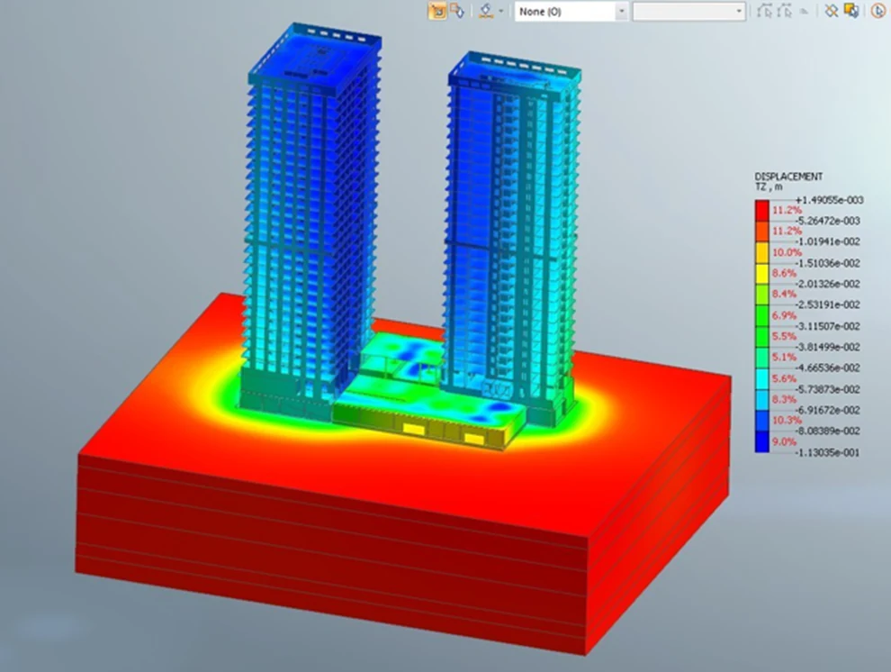
Soil–structure modelSettlement fieldStage scheme
Staged tilt stabilisation · HS soil model
40 Akademika Pavlova
A nonlinear soil–structure interaction model with the Hardening Soil constitutive law reproduced the specified sequence of loading and unloading. Differential settlement and tilt were tracked after each stage to assess the proposed stabilisation scheme.
Global member verification and a local nonlinear model of the steel connection. Stress and deformation fields were considered together with the code-based component checks.
Nonlinear RC model
Nonlinear RC FE · anchorage verification
Anchorage within a plastic-hinge region
Project-specific verification where the available reinforcement embedment did not satisfy prescriptive development-length provisions. A local nonlinear reinforced-concrete model traced force transfer, cracking, reactions and deformation over the loading history to substantiate the adopted anchorage solution.
Pre-test forecast · load testing · model verification
Prediction and full-scale verification of slab deflections
Pre-test deflection forecasts were prepared for the specified loading programme. Measured histories from three slab sections were compared with the predicted response to verify model stiffness and the assessment basis used for the tested structure.
The global reinforced-concrete model resolved the load path of the large façade cantilever, including vertical deflection, cracking-sensitive stiffness and force transfer into the back-span walls and supporting frame. The calculated response was compared with loading data.
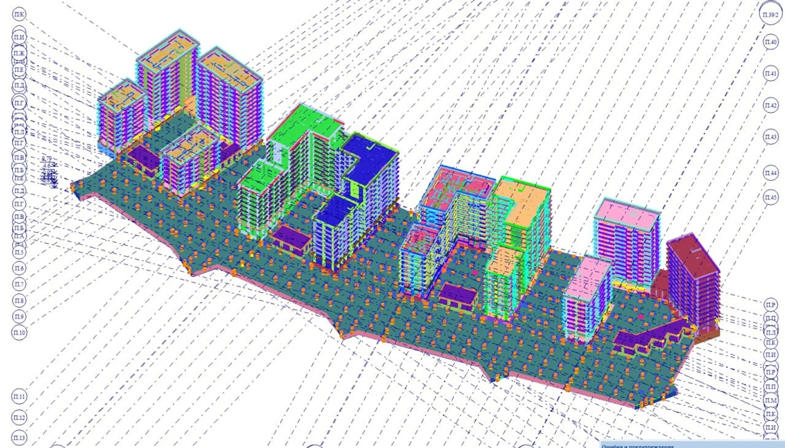
Complex-wide model
Multi-building FE model · shared podium
Desenovsky residential development
A complex-wide model combined the residential towers, lower-rise blocks and shared podium and foundation structure. It captured stiffness interaction between buildings, redistribution through the common substructure, and the actions and displacements governing each block.
Surface temperature fieldCore temperature fieldMeasured historyCalculation vs test
Hydration heat · transient thermal FE · test correlation
Hydration-heat model verification for early-age concrete
Heat-generation kinetics and boundary heat-transfer parameters were verified against measured specimen temperatures. The calibrated transient model was used to predict temperature and maturity-dependent strength development and to establish permissible early loading and formwork-stripping times, including under low ambient temperatures.
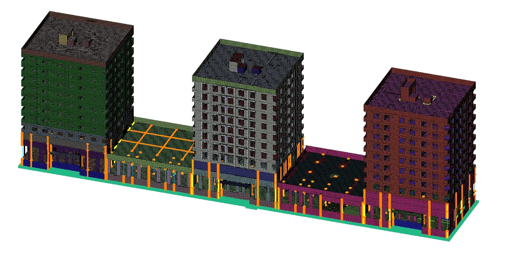
Global seismic modelProject view
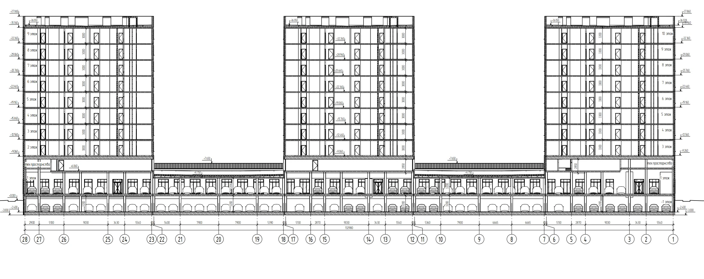
Transfer level
Seismic design · transfer slab · vertical irregularity
Residential complex, Yuzhno-Sakhalinsk
Global seismic analysis of three residential blocks over a common parking and podium. The transfer slab resolves non-aligned vertical elements between the towers and parking levels. Storey stiffness, drift and force redistribution at the transfer level were checked explicitly to exclude a soft-storey mechanism.
Industrial process framePile-supported facilityProcess buildingEquipment frameLong-span hallProduction buildingMulti-storey frame68 m lattice towerCircular structuresElevated trussIndustrial gallerySpecial slab system
Industrial facilities · steel structures · special systems
Industrial and special-purpose structures
Global models for process buildings, long-span steel frames, galleries, towers, pile-supported platforms and equipment-supporting structures. The schemes were checked for spatial stability, load redistribution and support reactions under permanent, operational, wind and equipment actions.
Verification of welded I-section portal frames, purlins and bracing. Linear and geometrically nonlinear analyses were used to check global response, displacement and the first buckling modes of the critical frames.
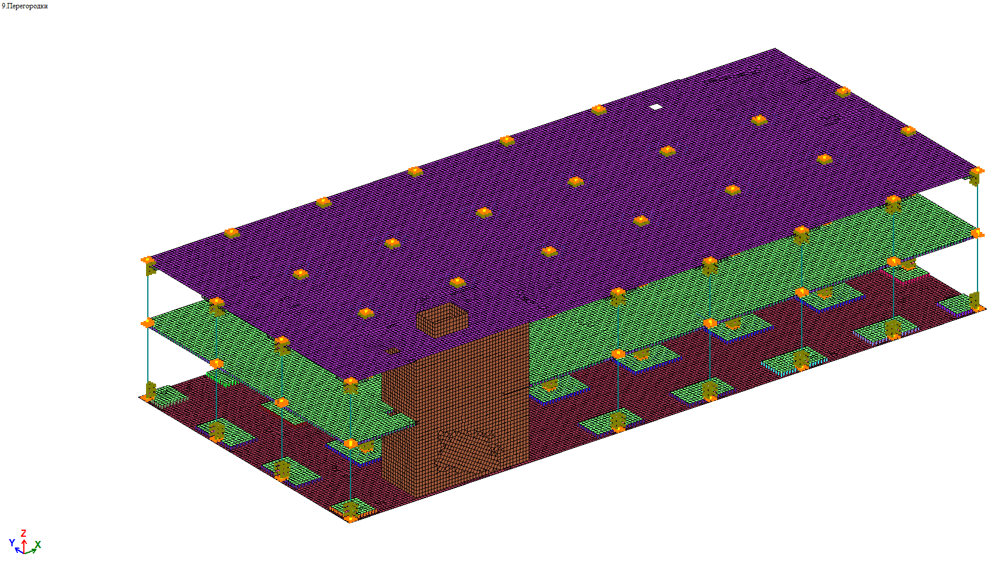
Strengthening model
Strengthening design · RC slabs and columns
Retail building, Starobittsevskaya
Strengthening design for the raft foundation, first-floor slab, roof slab and selected columns. The solutions included local thickenings, concrete overlays, capitals, anchorage and concrete shear keys to restore ULS and SLS compliance.
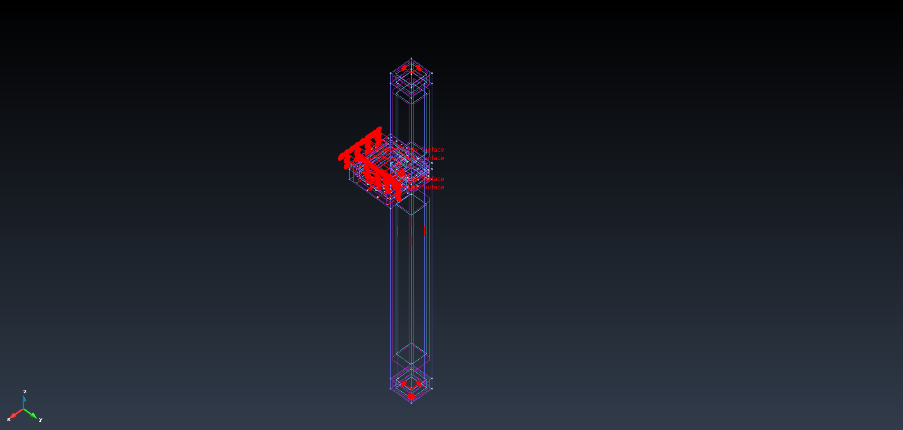
Local model and loading
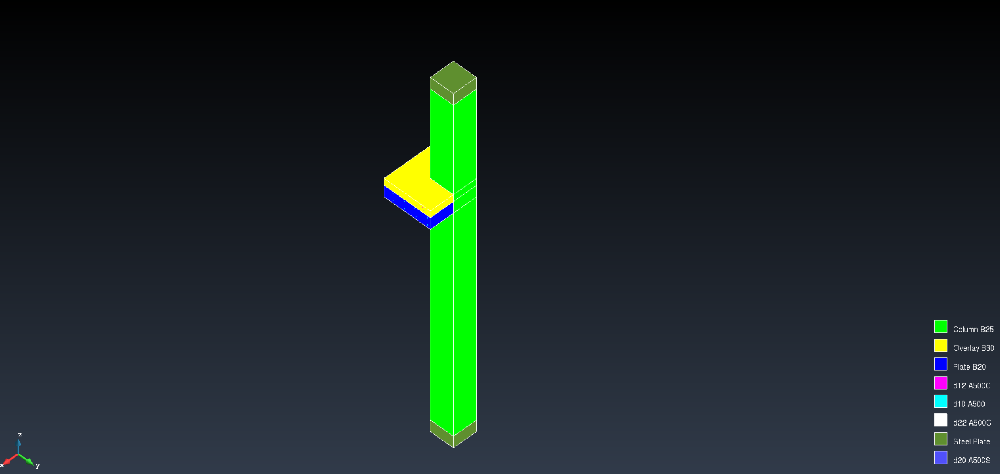
Materials and contactsReinforcement detail
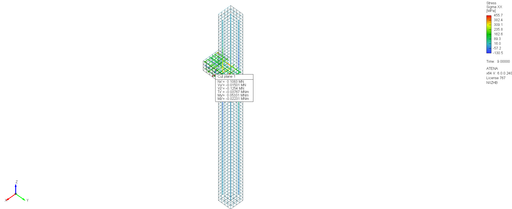
Limit-state stress
Nonlinear RC FE · strengthened joint
Corner-column strengthening verification
A three-dimensional nonlinear model resolved materials, contact zones and reinforcement within the strengthened corner-column joint. The analysis traced force transfer between the existing and new components and reinforcement stress up to the governing limit state.
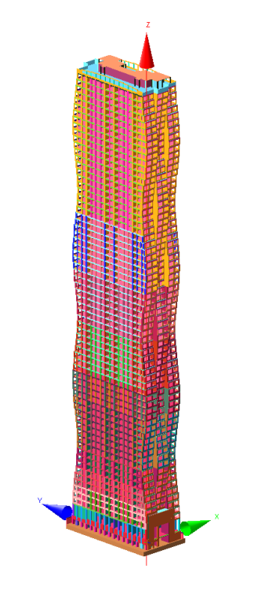
69-storey global model
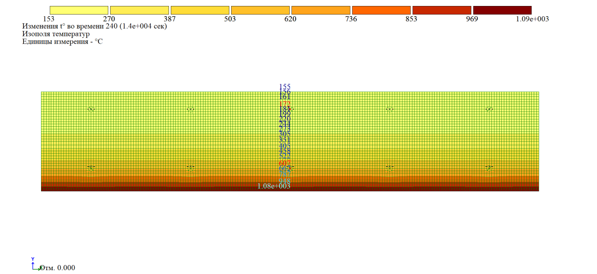
Design-fire field
High-rise optimisation · dynamics · fire
69-storey residential tower, Pechatniki
Optimisation of a 69-storey tower over a three-level podium. Reducing wall thickness above Level 51 was checked against stiffness, dynamics and comfort; reinforcement, façade beams and sensitive zones were reviewed. Slab thickness was verified for the design fire by transient heat-transfer analysis.
Existing monument
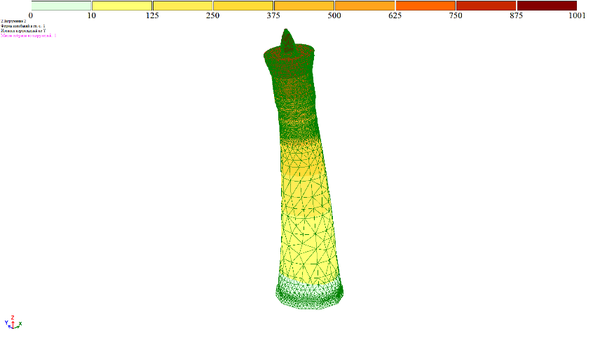
Modal model
Historic masonry · modal analysis · calibration
Kalyan Minaret, Bukhara
Preliminary modal assessment of the historic masonry minaret. Density, elastic modulus, strength, cohesion and friction ranges were assembled for the global model. The first calculated natural frequency was approximately 1.21 Hz, providing a reference for calibration against field measurements.
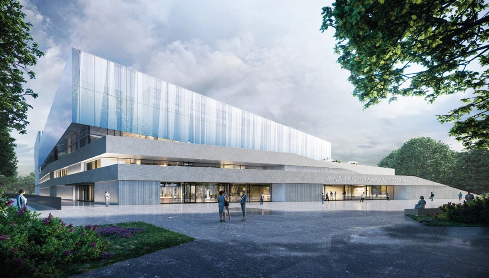
Architectural view
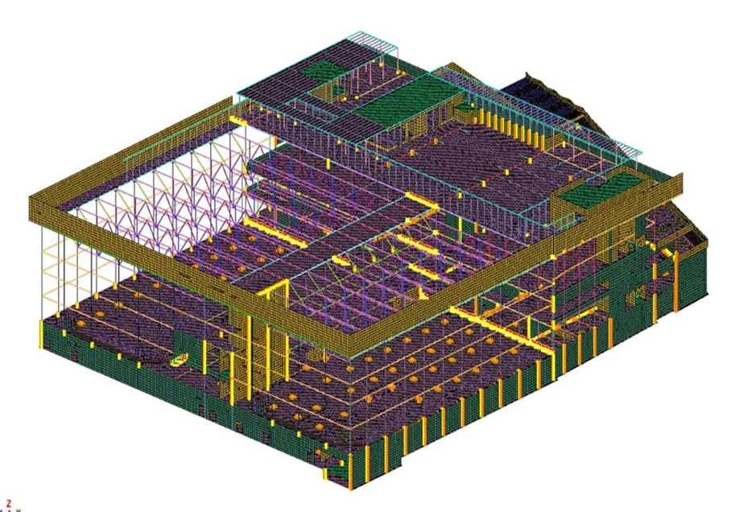
Calculation model
Calculation review · global FE model
Alexander Lebzyak Boxing Academy
Review of the structural calculations and global finite-element model for the sports complex. The assessment covered the adopted structural scheme and load paths, model idealisation, boundary conditions, stiffness assumptions, load combinations and the governing ULS and SLS results.